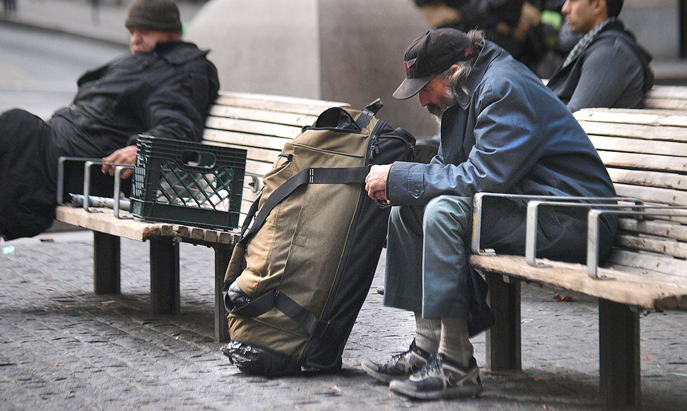

VR the Homeless
April 8, 2018

NEW YORK CITY- The cities across the United States have seen a huge spike in homelessness since the start of the early 2000s. With homeless shelters and soup kitchens only being able to provide so much, a New York City start-up is hoping to take some their share of the workload.
The company ihome> is using state of the art technology to accurately represent the experience of having a home, using a Virtual Reality headset. The company aims to strap the headsets on to sleeping homeless throughout cities across the US. The users of the ihome> will be given the full experience of having a home complete with bed, toilet, and backyard trampoline.
Company CEO Dan Cortez hopes that with the homeless being able to experience life inside a home, they will become more docile and be able to function in the non-virtual world. The ihome> hasn’t been free of controversy however, as some trial test groups were accidently strapped in with the VR horror game Resident Evil, which resulted in a sharp increase in disruptive behavior.